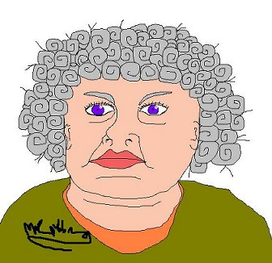

Tuesday, March the 23rd, 2004
back to: title, date or indexes
On 17th March we promised that a signed self-portrait of Mrs Gubbins would be made available to readers.

I am afraid that the picture, which indeed bears a striking resemblance to Mrs Gubbins, is in fact a forgery. Our art consultant, Vidiadhar Engineer, has subjected the portrait to a battery of often alarming tests, some of which involve volatile chemicals, and has concluded that “the penmanship could not have come from Mrs Gubbins' palsy-withered hand. It is clearly a fake.” Reader Sam Byrne has confessed to the imposture, and Mrs Gubbins has been arrested.